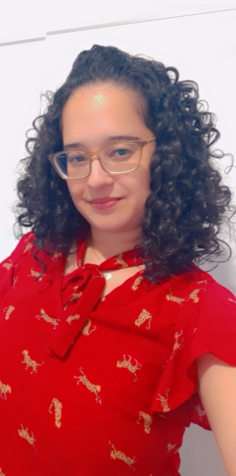

Uma garota meiga ,carinhosa,divertida e introvertida. Gosta de ler livros em parques para relaxar , ama os animais “cachorros principalmente” tem uma cachorrinha fofa chamada leia , uma menina de poucos amigos mas os que têm são os melhores e importantes . Fez faculdade de letras e com a pandemia dando aulas online despertou o interesse de saber como as coisas funcionam por traz e então iniciou a transição de carreira para a área da tecnologia que está sendo maravilhoso , no momento fazendo o bootcamp da generation e alguns cursos por fora e quer aprofundar ainda mais fazendo uma faculdade na are de tecnologia.
